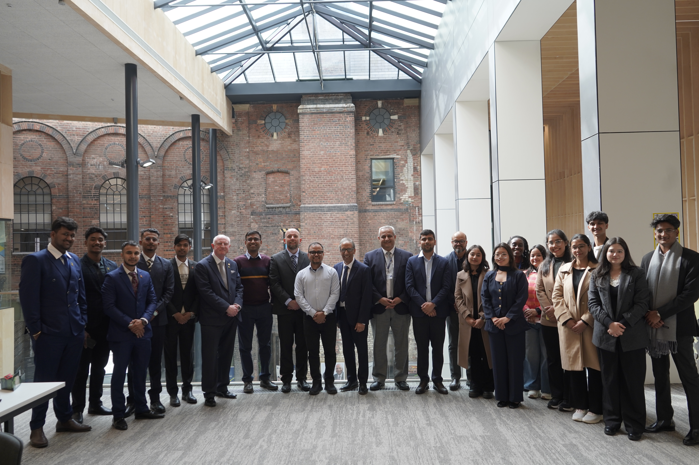

WLV Exchange
Fellowship.
Academic exchange, industry visits, and new perspectives with the University of Wolverhampton.
Learning, with
the world open.
The WLV Exchange Fellowship brought a selected group of Herald College Kathmandu students to the University of Wolverhampton for academic engagement and cultural exchange. Lectures, tutorials, and workshops offered a chance to learn alongside faculty and industry experts, while visits connected classroom ideas with engineering and aviation history.
Alongside the university programme, I visited the Triumph Factory Visitor Experience in Hinckley and the Royal Air Force Museum at Cosford. I also explored Wolverhampton, Birmingham, and Manchester, including Wolves Stadium, Old Trafford, and Lancashire County Cricket Ground. In London, I visited Big Ben, London Bridge, Tower Bridge, the London Eye, the British Museum, Hyde Park, Buckingham Palace, and Lord’s Cricket Ground.
BirminghamTRIUMPH · CITY VISIT



Add each photo to images/events/ using the filename shown in its tile. Portrait slots suit individual and place photos; the wide slots are for group photos. Select an added photo to view it larger.
Fellowship background: Herald College Kathmandu, “WLV Exchange Fellowship 2026.”
READ THE COLLEGE STORY ↗